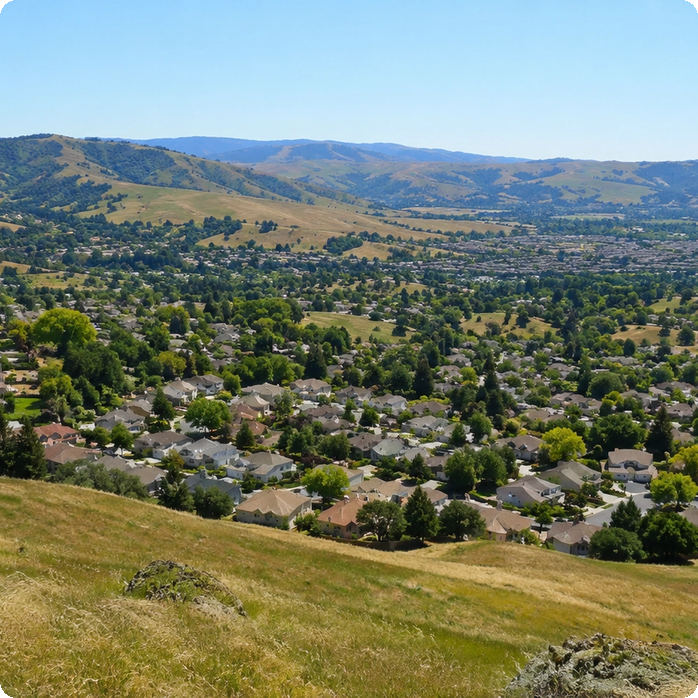
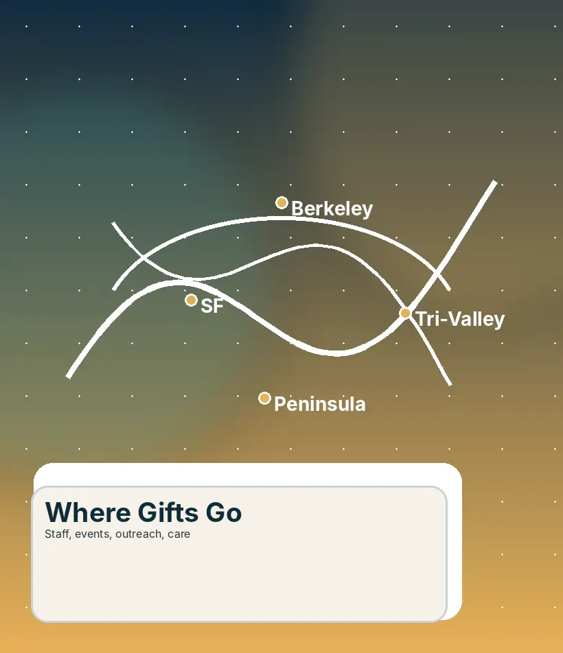
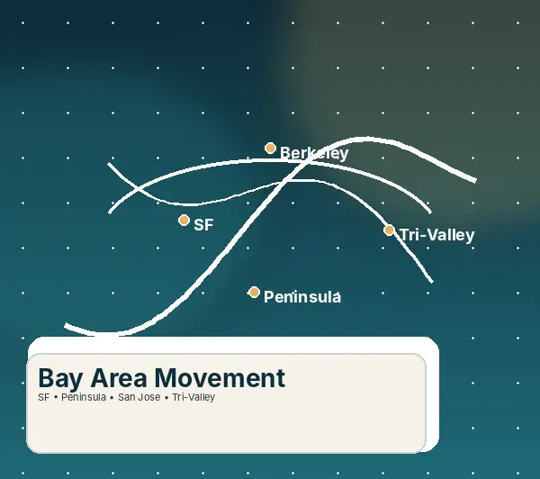
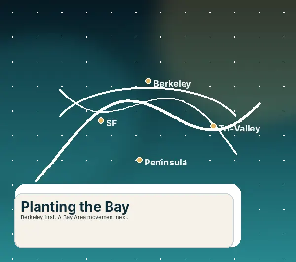
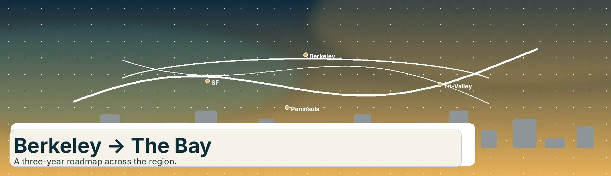

PLANTING THE BAY
Launching in Berkeley on September 1, then expanding across the Bay Area.


A movement with a clear path.
Planting the Bay exists to tell the story, cast the vision, and invite people to give or get involved in a multi-region Bay Area movement.
Ways to partner:
-
Give monthly or one-time
-
Serve, host, or relocate
-
Pray and follow updates
Every contribution plays a part in the launch—through generosity, presence, and steady prayer.
Together, these simple steps help build a healthy Berkeley base and prepare the way for Baywide growth.
This path is designed to move from a strong local launch to a broader regional movement. Berkeley establishes the foundation, campus ministry expands the reach, and long-term support helps carry the vision into new communities across the Bay.
Why the Bay, why now?
The Bay Area is one of North America’s highest-leverage opportunities for church planting and campus ministry.

Launch Berkeley and establish a strong foundation for future expansion.
To launch Berkeley and support expansion.




Berkeley first -> expand across the Bay
A simple visual path from the first planting to a multi-region Bay Area movement.
Expansion path
Berkeley -> San Francisco -> Peninsula
San Jose -> Tri-Valley -> beyond.

Ways to join the mission
Frequently Asked Questions
Answers for donors, volunteers, and families exploring how to join the Bay Area planting movement.
The launch begins in Berkeley in partnership with the SF Bay Fellowship, building both campus ministry and a local church.
The Year 1 goal is $1,000,000 to support the Berkeley launch, staff, campus ministry, pop-up services, and early expansion.
Yes. Recurring giving is emphasized because stable monthly support helps sustain staff, outreach, events, and long-term growth.
You can serve locally, pray, host or support pop-up services, relocate to the Bay, or explore joining the planting staff.
The initiative is connected to a 501(c)(3) giving structure, with fund designation and receipt details included in the giving process.
Stuart and Ashley Mains serve as Lead Evangelist and Planting Coordinators for the Bay Area initiative.
Stories, progress, events, and prayer needs will be shared through email updates, social content, and story pages.
Latest updates & stories
Follow stories, prayer needs, and field updates as the Berkeley launch grows into a Bay Area movement.